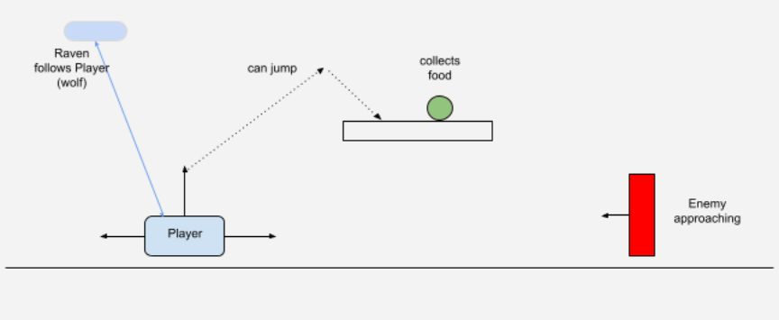
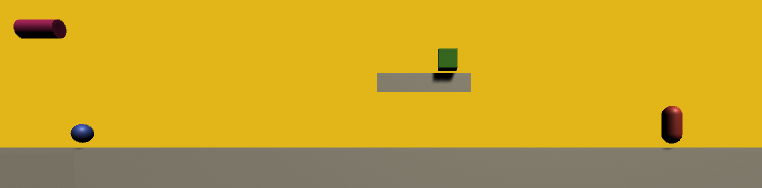

class: center, middle .title[Creative Coding and Software Design / Game Development 2] <br/><br/> .subtitle[Week 4: Personal Project] <br/><br/><br/><br/><br/><br/> .date[Mar 2021] <br/><br/><br/> .note[Created with [Liminal](https://github.com/jonathanlilly/liminal) using [Remark.js](http://remarkjs.com/) + [Markdown](https://github.com/adam-p/markdown-here/wiki/Markdown-Cheatsheet) + [KaTeX](https://katex.org)] ??? Author: Grigore Burloiu, UNATC --- name: toc class: left # ★ Table of Contents ★ <!-- omit in toc --> 1. [Personal project labs](#personal-project-labs) 2. [Example design](#example-design) 3. [Interaction](#interaction) 4. [Mapping out the project](#mapping-out-the-project) 5. [Assignment](#assignment) <!-- Comment out the next slide if you don't want the Table of Contents link --> --- layout: true .toc[[★](#toc)] --- name: personal-project-labs # Personal project labs [1. project plan](https://learn.unity.com/tutorial/lab-1-personal-project-plan) [2. primitives](https://learn.unity.com/tutorial/lab-2-new-project-with-primitives) [3. player control](https://learn.unity.com/tutorial/lab-3-player-control) [our design doc](https://docs.google.com/document/d/1WGm_XWIbq0p8gobweIWCgX0udo4pBJFtTGfdcNukBGU/edit) --- name: example-design class: center # Example design   --- name: interaction # Interaction move left-right constrain - to ends of plane? of camera-viewport? jump fire attackWave / projectile --- name: mapping-out-the-project # Mapping out the project Useful tools: - [Network Diagrams](https://graphicalnetworks.com/blog-logical-vs-physical-network-diagrams/) (logical / physical) - [Flowcharts](https://www.visual-paradigm.com/tutorials/flowchart-tutorial/) (logical steps) - [UML](https://medium.com/kidstronics/unity-point-click-adventuregame-09-a71fe94dd402) (OOP code) <br/><br/> - *(in order of necessity)*\* -- Design paradigms: - bottom-up - solving problems / building abstractions. experimentation. iterative growth. - top-down - establishing structure. setting dependencies --- class: center ## Example modular hierarchy main > fx-module > fx-input <img style="width:90%" src="https://raw.githubusercontent.com/RVirmoors/fred-arditti/master/readme/overview.PNG"> - https://github.com/RVirmoors/fred-arditti --- class: center ## Example modular hierarchy main > fx-module > fx-input <img style="width:90%" src="../attachments/fred-modules.png"> - abstractions - encapsulation - signal & message routing --- name: assignment class: left # Assignment create a new personal project sketch (can be a mini-game, or any interactive piece) make a copy of the [design google doc](https://docs.google.com/document/d/1hrX0KVid_9bBb5rJSEEZmOxcXtm_qezbFbZMRDD9szU/copy) & fill it in create a Unity sketch, recreating the main components with primitives & positioning the camera accordingly (optional) - implement basic movement/interaction mechanics submit: - a link to your design google doc - a VIDEO or IMAGE showing the Unity scene (please don't upload the .unitypackage)